금속재료기사 (2021-05-15 기출문제)
1과목: 금속조직학
1. 다음 철강 조직 중 연성이 가장 좋은 것은?
- 마텐자이트
- 페라이트
- 펄라이트
- 베이나이트
(정답률: 80%)

2. 면심입방격자의 배위수는?
- 4
- 8
- 12
- 16
(정답률: 80%)
3. 순금속의 냉각 곡선에 대한 설명으로 틀린 것은? (단, 순금속이 액상에서 단일 고상으로 냉각된다고 가정한다.)
- 잠열이 발생하면서 응고가 진행된다.
- 수평직선부에는 고체만이 존재한다.
- 수평직선부에서 발생되는 열량은 용해 과정에서 흡수된 열량과 관계가 있다.
- 액상→액상+고상→고상 순으로 응고가 일어난다.
(정답률: 87%)
4. 금속의 기본 결정구조가 아래 그림과 같을 때, 조성으로 옳은 것은? (단, ●는 A원자이며, ○는 B원자이며 각 면의 중심에 자리하고 있다.)
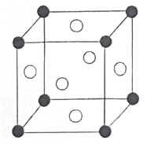
- A 25%, B 75%
- A 50%, B 50%
- A 75%, B 25%
- A 67%, B 33%
(정답률: 80%)
5. 고온의 불규칙상태 고용체를 천천히 냉각할 때, 규칙격자가 형성되기 시작하는 온도의 명칭은?
- 규칙온도
- 천이온도
- 변형온도
- 불규칙온도
(정답률: 85%)
6. Fe-Fe3C 상태도에서 ‘δ-Fe+L-Fe→γ-Fe’의 반응은?
- 석출경화
- 공적반응
- 포정반응
- 편정반응
(정답률: 84%)
7. 다음과 같은 A-B-C 3원계 상태도에서 P점의 A성분 농도를 옳게 나타낸 것은?
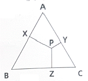
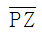
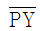
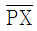
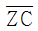
(정답률: 87%)
8. 다음 그림에서 빗금 친 abc 면의 밀러 지수로 옳은 것은? (단, 모든 원의 간격은 동일하다.)
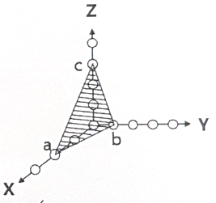
- (263)
- (236)
- (312)
- (362)
(정답률: 83%)
9. 다음 중 철의 상과 조직에 대한 설명으로 옳은 것은?
- 원자 충진율은 오스테나이트보다 페라이트가 더 크다.
- 펄라이트는 페라이트와 레데뷰라이트가 층상형태로 구성하고 있다.
- 페라이트는 탄소를 약 0.85% 함유하며, 강도가 좋고, 마모에 강하다.
- 오스테나이트는 강자성의 성질을 갖지 않는다.
(정답률: 72%)
10. 다음 중 전율고용체의 조건이 아닌 것은?
- 두 금속의 결정구조가 같아야 한다.
- 두 금속이 액상에서 완전 혼합되어야 한다.
- 두 금속은 일정한 화학적 유사성이 있어야 한다.
- 두 금속의 격자상수가 최소 15%이상 차이가 있어야 한다.
(정답률: 76%)
11. 다음 금속 결함 중 면결함에 속하는 것은?
- dislocation
- vacancy
- twin
- creep
(정답률: 84%)
12. 다음 중 상온에서 결정구조가 다른 하나는?
- Co
- Fe
- Zr
- Ti
(정답률: 69%)
13. 물의 3중점의 Gibbs 상률은?
- 0
- 1
- 2
- 3
(정답률: 82%)
14. 다음 중 동소변태가 일어나지 않은 금속은?
- Fe
- Ti
- Co
- Ni
(정답률: 60%)
15. 금속의 변태점 측정에 사용되는 방법이 아닌 것은?
- 열분석법
- 전기저항법
- 열팽창법
- 매크로검사법
(정답률: 85%)
16. 금속의 재결정에 관한 설명으로 틀린 것은?
- 결정 입자가 미세할수록 재결정 온도는 낮아진다.
- 금속의 순도가 높을수록 재결정 온도는 증가한다.
- 가공 시간이 길수록 재결정 온도는 낮아진다.
- 변형 정도가 작을수록 재결정을 일으키는데 필요한 온도는 높아진다.
(정답률: 75%)
17. 철 합금의 조직에서 복합상으로 구성된 조직이 아닌 것은?
- 과공석 조직
- 펄라이트 조직
- 마텐자이트 조직
- 레데뷰라이트 조직
(정답률: 76%)
18. 다음 중 철강 소재에 침입형 원소로 고용되기 어려운 것은?
- C
- H
- P
- N
(정답률: 80%)
19. 오스테나이트 안정화 원소에 해당되는 것은?
- Mn
- Si
- Cr
- Nb
(정답률: 81%)
20. 다음 중 격자상수가 a=b≠c 이고, 축각이 α=β=γ=90°인 결정계는?
- 입방정계
- 정방정계
- 사방정계
- 삼사정계
(정답률: 79%)
2과목: 금속재료학
21. 다음 중 고속도 공구강 강재인 것은?
- STC 95
- STD 93
- STS 3
- SKH 55
(정답률: 70%)
22. 층상 펄라이트의 생성과정 순서로 옳게 나타낸 것은?
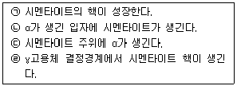
- ㉠→㉡→㉢→㉣
- ㉡→㉠→㉢→㉣
- ㉣→㉠→㉢→㉡
- ㉢→㉣→㉡→㉠
(정답률: 81%)
23. 분말야금법의 특징에 대한 설명으로 틀린 것은?
- 절삭공정의 생략이 가능하다.
- 다공질의 금속재료를 만들 수 없다.
- 용해법으로는 만들 수 없는 합금을 만들 수 있다.
- 제조과정에서 용융점까지 온도를 올릴 필요가 없다.
(정답률: 76%)
24. 비정질합금의 일반적인 특성에 관한 설명으로 틀린 것은?
- 열에 강하다.
- 결정이방성이 없다.
- 전기저항이 크다.
- 가공경화를 일으키지 않는다.
(정답률: 49%)
25. 로크웰 경도 시험에서 시험하중이 가장 큰 스케일은?
- A
- B
- C
- D
(정답률: 67%)
26. 관, 봉 형태의 황동에서 자연균열(season cracking)의 가장 큰 원인은?
- 쌍정
- 템퍼 인성
- 잔류 응력
- 결정립의 조대
(정답률: 85%)
27. 다음 중 강의 담금질에 따른 용적변화가 가장 큰 조직은?
- 마텐자이트
- 미세 펄라이트
- 오스테나이트
- 조대 펄라이트
(정답률: 76%)
28. 탄소강에 존재하는 원소 중 Si가 미치는 영향으로 틀린 것은?
- 충격치를 저하시킨다.
- 연신율을 증가시킨다.
- 탄성한계를 증가시킨다.
- 입자의 크기를 증대시킨다.
(정답률: 53%)
29. 다음 중 응고할 때 수축하지 않고 오히려 팽창하는 원소는?
- Bi
- Sn
- Al
- Cu
(정답률: 79%)
30. 다음 중 아연에 대한 설명으로 틀린 것은?
- 조밀육방격자형이다.
- 비중은 약 7.1, 용융점은 약 420℃이다.
- 산, 알칼리에 강하고 해수에 부식되지 않는다.
- 아연도금용, 전기방식용 양극재료에 사용된다.
(정답률: 76%)
31. 초소성을 얻기 위한 조직 조건에 대한 설명으로 틀린 것은?
- 결정립의 모양은 등축이어야 한다.
- 모상의 입계는 저경각이 좋다.
- 입도는 미세립이고 결정립의 크기는 수 이하이어야 한다.
- 제2상이 존재하는 경우 강도는 모상과 같은 강도를 가지며 균일한 분포를 유지하면 좋다.
(정답률: 76%)
32. 강재의 시험 중 조미니 시험의 목적은?
- 경화능 시험
- 초단파 시험
- 자기이력 시험
- 전자유도 시험
(정답률: 82%)
33. 강의 표면처리에서 침탄용 강에 대한 설명으로 틀린 것은?
- 고탄소강이어야 한다.
- 표면에 결함이 없어야 한다.
- Cr, Ni, Mo는 침탄량을 증가시키는 원소이다.
- 고온에서 장시간 가열하여도 결정입자가 성장하지 않아야 한다.
(정답률: 69%)
34. 카트리지 황동(cartridge brass)에 대한 설명으로 틀린 것은?
- 가공용 황동이다.
- 70%Cu+30%Zn황동이다.
- 판, 봉, 관의 형태로 사용된다.
- 금박 대용으로 사용하며, 톰백이라고도 한다.
(정답률: 74%)
35. Sn-Sb-Cu계 합금인 화이트 메탈의 명칭은?
- 다우(dow)메탈
- 배빗(babbit)메탈
- 바이(bi)메탈
- 플래티나이트(platinite)
(정답률: 83%)
36. 백주철을 탈탄 열처리하여 순철에 가까운 페라이트 기지로 만들어 연성을 갖는 주철은?
- 펄라이트가단주철
- 흑심가단주철
- 백심가단주철
- 구상흑연주철
(정답률: 79%)
37. 탄소강에서 인에 의해 나타나는 취성은? (문제 오류로 가답안 발표시 4번이 답안으로 발표되었으나, 확정답안 발표시 전항 정답 처리 되었습니다. 여기서는 가답안인 4번을 누르면 정답 처리 됩니다.)
- 수소취성
- 고온취성
- 적열취성
- 청열취성
(정답률: 85%)
38. 다음 중 용융점이 가장 높은 금속은?
- Au
- Co
- Ni
- Ti
(정답률: 69%)
39. 해드필드(Hadfield)강에 대한 설명으로 틀린 것은?
- 베이나이트 조직을 가진 강이다.
- 고온에서 서냉하면 결정립계에 탄화물이 석출된다.
- 수인법을 통해 인성을 부여한다.
- 열전도성이 나쁘고, 팽창계수도 커서 열변형을 일으킨다.
(정답률: 68%)
40. 동계 베어링합금에 대한 설명으로 틀린 것은?
- 켈밋(kelmet)은 Cu-Pb계 합금이다.
- Cu-Pb계 합금은 저속저하중용 베어링에 사용된다.
- Cu-Pb계 베어링은 내소착성이 좋다.
- Cu-Pb계 합금은 Pb가 편석하기 쉽다.
(정답률: 73%)
3과목: 야금공학
41. 다음 중 세기 성질(intensive property)에 해당되는 것은?
- 몰당 부피
- 엔탈피
- 깁스 자유에너지
- 엔트로피
(정답률: 71%)
42. A-B 두 성분으로 구성된 용액의 성질에 대한 설명으로 틀린 것은?
- XA→1 때 A는 Raoult의 법칙에 따른다.
- XB→0 때 B는 Henry의 법칙에 따른다.
- 용질 B가 Henry의 법칙에 따르는 농도 영역에서는 용매 A는 Raoult의 법칙에 따른다.
- 용액에서 용매는 Raoult의 법칙에 따르고 용질은 Henry의 법칙에 따른다.
(정답률: 58%)
43. 다음 기체 연료 중 발열량(kcal/m3)dl 가장 큰 것은?
- 고로 가스
- 천연 가스
- 코크스로 가스
- 전로 가스
(정답률: 64%)
44. 1mol의 기체에서 압축 인자(Z=PV/(RT)에 관한 다음 설명 중 틀린 것은? (단, P는 압력, V는 부피, R은 기체상수, T는 절대온도이다.)
- 이상기체의 경우 모든 상태에서 Z는 1이 된다.
- 압력이 낮고 온도가 높으면 Z는 1에 근접한다.
- 압축하기 쉬운 기체는 저온에서 압력이 증가함에 따라 Z값이 일단 감소하였따가 증가한다.
- 실제기체에서는 어떤 온도에서도 Z값이 1이 될 수 없다.
(정답률: 55%)
45. 2몰의 단원자 이상기체가 순환과정을 거쳐 100J의 일을 하였다면, 이 순환에서 기체가 흡수한 열은? (단, 순환가정을 통한 내부에너지는 변화는 0이다.)
- -100J
- -50J
- 50J
- 100J
(정답률: 65%)
46. 다음 반응식에 대한 298K에서의 엔탈피 변화량(△H0)은 131.335kJ일 때, 398K에서 △H0값은 약 몇 kJ인가?
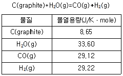
- 115.1
- 132.9
- 141.4
- 1740.3
(정답률: 48%)
47. 증기압이 50mmHg인 액체 A와 액체 B를 섞어서 A의 몰분율이 0.4 되는 용액을 만들었을 때, A의 증기압이 30mmHg이었다면 이 용액에서 A성분의 활동도 계수값은?
- 0.3
- 0.6
- 1.0
- 1.5
(정답률: 51%)
48. 탄소 0.5kg를 공기로 연소하여 CO가스가 생성될 때, 탄소 전체를 연소하기 위해 필요한 공기량(m3)은?
- 0.933
- 1.76
- 2.22
- 2.84
(정답률: 46%)
49. Van’t Hoff 식에 대한 설명으로 틀린 것은? (단, K는 평형상수이고, H는 엔탈피다.)
- △H＜0인 경우 화학 반응은 발열반응이다.
- 화학 반응에서 K에 미치는 온도의 영향은 △H의 부호와 크기에 의하여 결정된다.
- 화학 반응에서 K에 미치는 온도의 영향과 관계가 있는 식이다.
- △H＞0인 경우 온도상승에 따라 K는 감소한다.
(정답률: 64%)
50. 25℃에서 1 몰의 물을 등온 상태에서 1atm에서 100atm으로 압축했다면, 이때 엔트로피 변화는 약 몇 J/K인가? (단, 물의 압축율(β)은 0이고, 25℃에서 물의 열팽창계수는 2×10-4/K이고, 밀도는 1g/cm3으로 가정한다.)
- -0.364
- -0.319
- -0.277
- -0.252
(정답률: 25%)
51. 푸베이(pourbaix) diagram에 대한 설명으로 옳은 것은?
- 산소의 분압과 황의 분압에 따른 안전상의 평형구역을 나타내는 그림이다.
- 반응의 △G와 온도의 관계를 나타낸 것으로 황 또는 산소와의 친화력을 알 수 있다.
- 전위와 pH의 관계도로 수용액 중에서의 안정상을 확인할 수 있다.
- 수용액 중에서의 전류 밀도와 음극 전위를 나타내는 도표이다.
(정답률: 52%)
52. 제강공정에서 사용하는 탈산제의 구비조건에 대한 설명으로 틀린 것은?
- 산소와의 친화력이 Fe보다 낮아야 한다.
- 탈산제가 용강 중에 급속히 용해되어야 한다.
- 탈산생성물의 부상속도가 커야 한다.
- 탈산생성물이 용강 중에 남지 않게 제거가 잘되어야 한다.
(정답률: 71%)
53. 압력P, 온도T인 1몰의 이상기체가 진공으로 등온 팽창하여 부피가 2배로 되었을 때, △H, △S, △G를 구한 것으로 틀린 것은? (단, H: 엔탈피, S: 엔트로피, A: 헬름홀츠 자유에너지, G: 깁스 자유에너지)
- △H=0
- △A=RTln2
- △G=-RTln2
- △S=Rln2
(정답률: 59%)
54. 녹는점(Tm)에서 A(S)→A(L) 반응에 대해 Hom＞0일 때, 다음 중 엘림강(Ellingham) 그래프가 옳게 그려진 것은? (단, A(S)+O2=AO2(S)...직선 A, A(L)+O2=AO2(S)...직선 B이고, Tm(A(S))＜Tm(AO2(S))이다.)
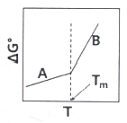
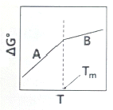
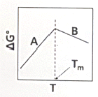
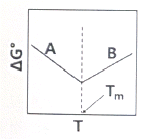
(정답률: 59%)
55. 이상기체로 이루어진 어떤 계가 가역 단열팽창을 했을 때 계의 엔트로피는 어떻게 되는가?
- 증가한다.
- 감소한다.
- 변하지 않는다.
- 증가할 때도 있고 감소할 때도 있다.
(정답률: 52%)
56. 제겔 콘 번호가 26일 때 표준 온도는?
- 1580℃
- 1660℃
- 1760℃
- 1860℃
(정답률: 58%)
57. 내화물에 대한 설명으로 옳은 것은?
- 샤모트질은 중성 내화물이다.
- 마그네시아질은 중성 내화물이다.
- 돌로마이트질은 염기성 내화물이다.
- SiO2는 산성과 염기성의 이중성을 가지고 있다.
(정답률: 75%)
58. 298K에서 2몰의 이상기체 A와 3몰의 이상기체 B와 5몰의 이상기체 C가 서로 섞여 이상기체 혼합물을 형성할 때 자유에너지 변화 값은?
- 0
- -2551J
- -25510J
- 24269J
(정답률: 48%)
59. 1몰의 이상기체가 10L에서 100L로 가역등온 팽창할 때 이상기체의 엔트로피 변화값은 약 몇 J/K인가? (단, 기체상수는 8.314J/moleㆍK이다.)
- 0
- 5.76
- 13.38
- 19.14
(정답률: 52%)
60. 고체 및 액체연료에서 고위발열량(HH)와 저위발열량(HL)과의 관계식은? (단, H=수소, W=수분, 발열량 단위 kcal/kg)
- HL=HH+600(9H+W)
- HL=HH-600(9H+W)
- HL=HH+486(9H+W)
- HL=HH-486(9H+W)
(정답률: 65%)
4과목: 금속가공학
61. 나사나 기어 모양의 다이로 소재를 눌러 소재 표면에 다이 모양을 그대로 각인시키는 가공법은?
- 압연 가공법
- 트림 가공법
- 인발 가공법
- 전조 가공법
(정답률: 67%)
62. 다음 중 금속의 결정립 미세화와 가장 거리가 먼 것은?
- 충격 인성을 상승시킨다.
- Hall-Petch 식과 관계가 있다.
- 연성-취성 천이온도를 상승시킨다.
- 고장력강에 유효하게 적용 가능하다.
(정답률: 60%)
63. 굽힘가공 시 스프링 백(spring back)에 관한 설명으로 틀린 것은?
- 항복응력이 클수록 스프링백이 증가한다.
- 탄성계수가 클수록 스프링백이 증가한다.
- 소성변형이 클수록 스프링백이 증가한다.
- 판재의 두께가 얇아질수록 스프링백이 증가한다.
(정답률: 55%)
64. 크리프 곡선이 다음과 같을 때, ⓐ 부분에 해당하는 명칭은?
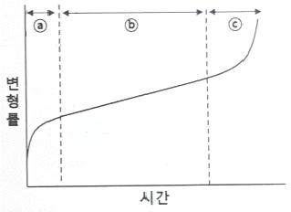
- 피로크리프
- 정상크리프
- 천이크리프
- 탄성크리프
(정답률: 57%)
65. 일반적으로 금속의 단결정에서 탄성률이 최대가 되는 방향은?
- [111]
- [110]
- [100]
- [101]
(정답률: 68%)
66. 취성파괴에 관한 Griffith식에 대한 설명으로 틀린 것은?
- 탄성계수가 작을수록 파괴응력은 증가한다.
- 표면에너지가 클수록 파괴응력은 증가한다.
- 탄성변형에너지와 표면에너지 개념을 도입하여 균열 전파조건을 제시하였다.
- Griffith식은 유리와 같이 매우 취약한 재료에 적용된다.
(정답률: 52%)
67. 2원 응력계의 모어 원(Mohr’s circle)의 직경은? (단, τ: 전단응력)
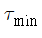
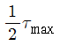
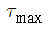
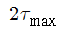
(정답률: 64%)
68. 강의 연성-취성 천이온도를 측정하기 위하여 가장 널리 사용되는 시험법은?
- 인장시험
- 충격시험
- 비틀림시험
- 굽힘시험
(정답률: 60%)
69. 재료 내 최대전단응력이 일정한 값에 이르면 항복이 일어난다는 항복 조건은?
- Fink의 항복조건
- Tresca의 항복조건
- Ekelund의 항복조건
- Mises-Hencky의 항복조건
(정답률: 78%)
70. 피로 저항을 향상시킬 수 있는 방법으로 옳은 것은?
- 결정립의 크기를 증가시킨다.
- 적층 결함 에너지를 작게 한다.
- 소수의 심한 슬립영역을 조장한다.
- 비금속 개재물의 수를 증가시킨다.
(정답률: 53%)
71. 균일변형 시 진변형률(ε)과 단면감소율(r)과의 관계로 옳은 것은?
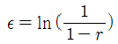
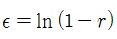
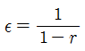
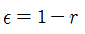
(정답률: 64%)
72. 항복점 현상에 대한 설명 중 틀린 것은?
- 저탄소강에서 잘 나타나는 현상이다.
- 항복점연신에서 일어나는 변형은 불균일하다.
- 항복점연신에 의하여 매끄러운 표면이 얻어진다.
- 침입형 원자와 전위와의 상호작용 결과로 나타나는 현상이다.
(정답률: 67%)
73. 전위에 관한 설명으로 틀린 것은?
- 전위는 선결함에 해당된다.
- 각 온도에서 평형 전위농도가 존재한다.
- 칼날전위의 경우 Burgers 벡터와 전위선은 수직이다.
- 전위가 활주할 수 있는 면은 전위선과 Burgers 벡터가 공존하는 면이다.
(정답률: 59%)
74. 훅쿠의 법칙을 바르게 나타낸 것은? (단, σ:응력(Stress), ε:변형률(Strain), E:영률(Young’s modulus))
- σ=E+ε
- σ=E-ε
- σ=E×ε
- σ=E/ε
(정답률: 76%)
75. 압출가공에 대한 설명으로 틀린 것은?
- 직접 압출을 전방 압출이라 한다.
- 간접 압출을 후방 압출이라 한다.
- 압출력은 간접 압출이 직접 압출보다 작다.
- 간접 압출은 제품의 램 진행 방향과 같은 방향으로 압출된다.
(정답률: 76%)
76. 변형시효 현상에 관한 설명으로 틀린 것은?
- 항복점 현상과 관련된 현상이다.
- 강도가 증가하고 연성이 감소한다.
- 치환형 용질원자에 의한 분위기(atmosphere) 형성과 관련된 현상이다.
- 냉간가공된 금속을 비교적 저온에서 시효 시킨 후 다시 변형시킬 때 나타나는 현상이다.
(정답률: 56%)
77. 소성가공에서 열간가공과 냉간가공을 비교 설명한 것 중 옳은 것은?
- 냉간가공보다 열간가공한 것이 산화물층이 적다.
- 냉간가공보다 열간가공한 것이 치수 정밀도가 높다.
- 냉간가공보다 열간가공한 것이 조직과 표면상태가 우수하다.
- 냉간가공보다 열간가공한 것이 단면감소율을 크게 할 수 있다.
(정답률: 67%)
78. 나선전위가 한 슬립면에서 활주하다가, 다른 슬립면으로 활주방향을 바꾸어 활주하는 것은?
- 상승운동
- 비보존운동
- 교차슬립
- 평면슬립
(정답률: 79%)
79. 그림의 전위폐곡선(loop)과 관련하여 잘못 설명된 것은?
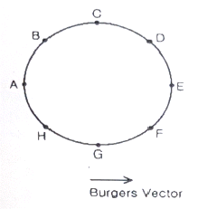
- A에서의 전위는 칼날전위이다.
- G에서의 전위는 나선전위이다.
- B에서의 전위는 혼합전위이다.
- A에서의 전위와 E에서의 전위는 부호가 같다.
(정답률: 71%)
80. 다음 중 인장시험에서 얻을 수 있는 정보가 아닌 것은?
- 인장강도
- 연신율
- 항복강도
- 피로강도
(정답률: 75%)
5과목: 표면공학
81. 주사전자현미경(SEM)의 특징이 아닌 것은?
- X선 회절현상을 이용하여 물질의 전자구조를 알 수 있다.
- 주사전자현미경은 광학현미경에 비하여 매우 높은 분해능을 가지고 있어 고배율로 대상물을 관찰할 수 있다.
- 주사전자현미경은 광학현미경에 비하여 초점심도가 깊어서 높낮이가 큰 대상물을 관찰할 수 있다.
- EDS를 장착하여 성분분석이 가능하다.
(정답률: 61%)
82. 용사법과 비교한 물리적 증착법의 특징이 아닌 것은?
- 피막의 조성이 고순도이다.
- 피막과 기판의 부착력을 조절할 수 있다.
- 공정을 구성하는 장치가 간단하고 비용이 비교적 저렴하다.
- 대기압보다 낮은 압력이 필요하다.
(정답률: 60%)
83. CVD 증착에 대한 설명으로 틀린 것은?
- 밀착성이 PVD에 비해 매우 우수하다.
- 균일한 피막을 얻을 수 있다.
- 화학반응 없이 증착이 가능하여 안전하다.
- Throwing Power가 좋다.
(정답률: 78%)
84. 인산염 피막 처리에서 피막의 종류가 아닌 것은?
- 인산철계
- 인산니켈계
- 인산아연계
- 인산망간계
(정답률: 66%)
85. 담금질 균열의 방지 대책으로 틀린 것은?
- 시간담금질을 활용한다.
- 구멍에는 찰흙이나 석면으로 채운다.
- Ms ~ Mf범위는 가능한 한 급냉한다.
- 날카로운 모서리를 이루지 않도록 한다.
(정답률: 72%)
86. 진공증착 후 래커(Lacquer) 코팅을 하는 목적이 아닌 것은?
- 내마모성 향상
- 염색 색상 보호
- 변색 방지
- 취성 향상
(정답률: 77%)
87. 진공가열 중 강 표면에 기대되는 효과가 아닌 것은?
- 표면이 산화된다.
- 가스의 침입을 방지한다.
- 표면에 탈가스 작용을 한다.
- 표면에 부착된 절삭유나 방청유의 탈지 작용을 한다.
(정답률: 75%)
88. 다음 금속 중 자기 변태를 일으키는 금속이 아닌 것은?
- Fe
- Ti
- Co
- Ni
(정답률: 52%)
89. 강재의 표면 경화 시 경화불량의 원인이 아닌 것은?
- 침탄 부족이 발생한 경우
- 침탄 후 담금질 온도가 너무 낮은 경우
- 침탄 후 담금질 시 냉각속도가 빠를 경우
- 표면층에 잔류 오스테나이트가 많이 존재할 경우
(정답률: 60%)
90. 입방결정에 입사되는 X선에 회절이 일어날 수 있는 다음의 면 중 브래그 각이 가장 큰 면은?
- (100)
- (111)
- (311)
- (331)
(정답률: 66%)
91. 전기도금과 비교한 무전해도금에 대한 특징으로 틀린 것은?
- 정류기기가 필요하다.
- 도금의 속도가 느리다.
- 비금속 소재에도 도금이 가능하다.
- 도금액 관리를 엄격하게 해야 한다.
(정답률: 68%)
92. 인산염처리 후 방청성을 향상시키기 위한 봉공처리액으로 효과적인 것은?
- 염화나트륨 수용액
- 알칼리액
- 초순수액
- 크롬산
(정답률: 63%)
93. 다음 중 이온도금에 대한 설명으로 틀린 것은?
- 도금층의 밀착력이 우수하다.
- 화합물막의 형성이 용이하다.
- 메톡스(MATTOX)법은 이온도금의 한 종류이다.
- 이온도금은 고상에서 기상으로 결정성장을 시킨다.
(정답률: 70%)
94. 아연도금이 완료된 제품에 변색을 방지하기 위한 처리는?
- 크로메이트 처리
- 인산염피막 처리
- 봉공 처리
- 크롬도금 처리
(정답률: 54%)
95. 일반적으로 용융도금에 사용되지 않는 금속은?
- Zn
- Al
- Sn
- Ni
(정답률: 54%)
96. 다음 중 오스포밍(ausforming)과 관련 없는 내용은?
- 소성 가공
- 베이나이트 변태
- 강도와 인성의 향상
- 불안정한 오스테나이트 상태
(정답률: 58%)
97. 다음 중 양극산화처리의 종류가 아닌 것은?
- 수산법
- 황산법
- 염산법
- 크롬산법
(정답률: 50%)
98. 다음 중 진공챔버(Vacuum Chamber)내에 플라즈마가 형성되었을 때, 존재하지 않는 것은?
- 전자
- Ar+ 이온
- Ar기체분자
- 천이금속
(정답률: 73%)
99. 다음 중 강재를 정지상태에서 냉각할 때, 냉각능력이 가장 큰 것은?
- 공기
- 기름
- 식염수
- 물
(정답률: 66%)
100. 화학적 기상도금(CVD)의 반응 형식에 속하지 않는 것은?
- 치환반응
- 액체확산
- 수소환원
- 반응증착
(정답률: 69%)